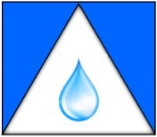
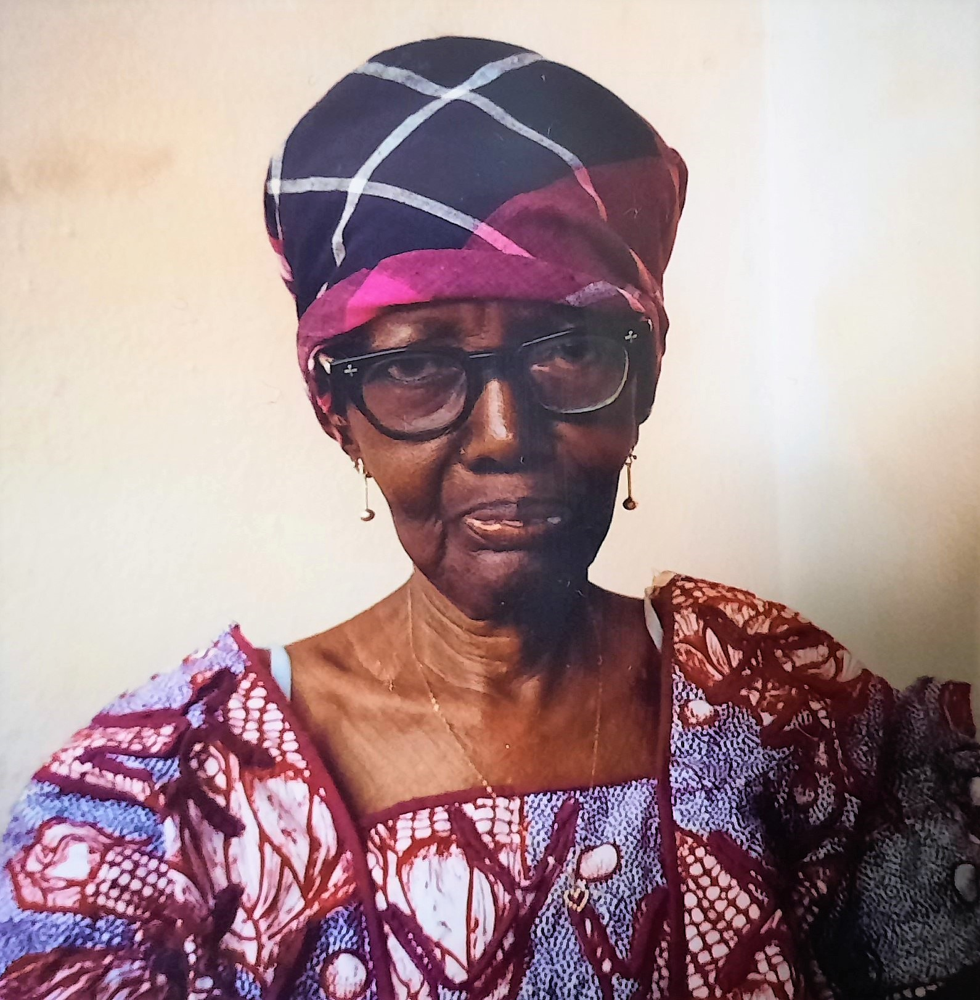
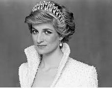
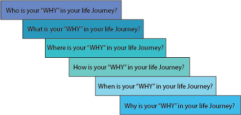

About TOCEANS
Are WE drowning on the narratives placed on us? What is the centre of who WE really are?
How to get to the attribute of why WE are in this life Journey? Your key and resolution to
these circumstances and situations is how TOCEANS was formed.
Dunstant is the Chief Empowerment Executive Strategist and founder of TOCEANS, he is a Servant Leadership Development Influencer, Coach, Speaker, Poet, Author and Mentor.
Dunstant is a Passionate about assisting others connect with:
Dunstant is the Chief Empowerment Executive Strategist and founder of TOCEANS, he is a Servant Leadership Development Influencer, Coach, Speaker, Poet, Author and Mentor.
Dunstant is a Passionate about assisting others connect with:
- Inspirational Core Value, with what makes you be YOU
- Influencing your master mind attitude restructuring
- Servant Leadership with root, reason and reaction
- Life lesson learned through cause, action, and reaction
- Development and empowerment for your journey aided my mentorship
TOCEANS is all about Servant Leadership, Personality Dimensions to Succeed, and also to create journeys for others to grow, succeed and shine.
Dunstant's educational background is in Mechanical Engineering, Strategic
Management, Professional Management and Quality Assurance. He is a
Distinguished Toastmaster (DTMx3), specializing in servant leadership,
mentoring, and coaching. Dunstant's main fun and passion are, to explore
your inner strangth to create growth and understanding so others will
shine. He is an experienced Motivational and Inspiration speaker, with
strategic thinking styles and dimensional techniques for progression.
Dunstant loves to create unique ideas and knowledge master minds for your
future journey in life through Talents, Treasures, and Time. His main
goals and happiness are to let others succeed and benefit from tactical
changes, through Services, Support, and Sacrifice.
Philosophy
TOCEANS creativity and differencial insight, works with your or your team, to Embryonic your potention,
It's Now!!!!!!!
TOCEANS passionately believes we are limited by the items, situation, circumstances that we allow to bound us and the crucial mindset to success and productivities are already in our tool boxes.
TOCEANS empowerment is to walk beside you or your team, to show you the password to open your mindset, encourages you to excite self and also enable others.

PLANT A SEED and MAKE IT FLOURISH
ESSE QUAM VEDERI (To be, rather to be seen)

SERVANT LEADERSHIP, SUPPORT ENGAGEMENT AND EMPOWERMENT
Purpose and Why of TOCEANS
There are 5 fabulous, fantastic, fulfilled, fruitful and forward-thinking woman in my life that energized me to create TOCEANS. These 5 exceptional and empowering ladies morals, unique ideas and life processes, propels me to be a mentor, coach and support others to excel and shine.
It is out of their inner strength, growth for understanding, making others shine, creating positive ripple effect and exploring outcomes for other to be themselves and be one in a centre universe. These ladies are:
Mrs. Elisabeth Dorother Babylove Taylor, (my late mum)
Mother Teresa (Catholic Saint, Catholic Nun)

Mrs. Elizabeth Felicia Fejabie Taylor, (my late grandmother)

Princes Diana Frances Spencer, (late Pricess Diana, Princess of Wales)
Mary Magalene, (mother of Jesus)
My TOCEANS is empowerment, influences, coaching, presentation or as a mentor is to create:
- TRANSFORMING to leave unique ideas and knowledge for your future journey in life
- OPPORTUNITIES to let you, your team or group shine and succeed in the journey of life
- CARING and providing hope, benefits, and servant leadership for other journey in life
- ENRICHING the "why" in you, your team, or group in the journey of life
- ASSISTING in the journey of life
- NURTURING what makes you unique, different and belong in the journey of life
- SEEDERSHIP in the journey of life
Remember it does not matter what stage your are in, think of it as growth and improvement journey. Are you ready?
Connect your visions and concepts into reality. Advance your goals and intuitions into achievements. Nurture your thinking or thought processes into results. Remember every needs or wants has an ego to feed
- Growth Developments are key ingredient by your evidence of Life's Lessons
- Struggles are sovled by your evidence of Life's Learning
- Problems are solved by your evidence of Life's Wisdoms
- Situations and Circumstances are key ingredients by your Life's Journey
- The "Why in our Life" is the evidence of Life Understood
Services of TOCEANSs
TOCEANS will empower, entice, edify and engage you to:
- Presentation and Keynote Speaker
- Mentoring and Coaching
- Personnel Services to Exciting, Empower and Engage
- Influencing your Master Mind
